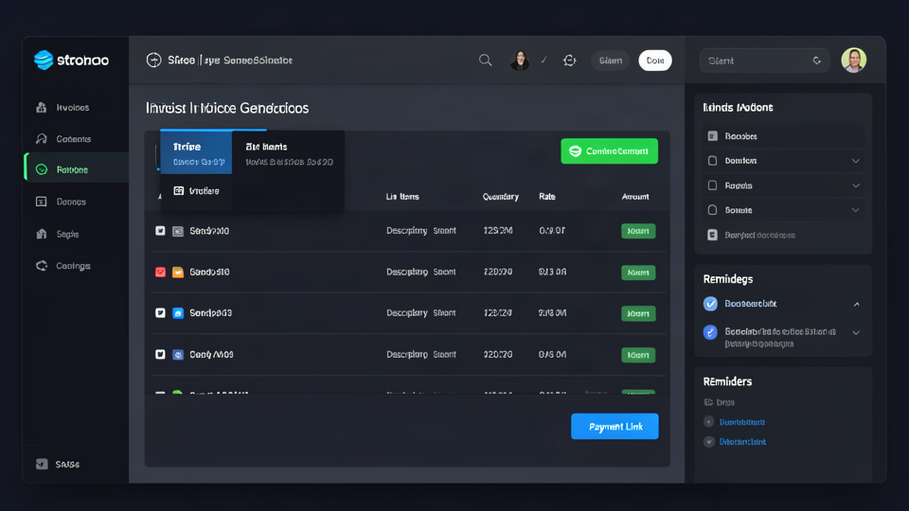

The Developer's Guide to Stripe Invoice Generators: Automate Your Freelance Billing in 2026

If you're a developer, designer, or writer billing clients through Stripe, you already have the hardest part solved: the payment rail. Stripe processes the money. But between "project done" and "money in the bank," there's a gap that costs freelancers hours every month — and a surprising amount of revenue.
This guide is the gap-filler. We'll walk through Stripe invoice generators from first principles: what they are, which ones actually work in 2026, how to automate Stripe invoicing end-to-end, and how to get paid faster as a freelancer without becoming a collections agency. If you've ever searched for a freelance invoice generator Stripe users trust, or hunted for a stripe invoice template for freelancers that doesn't look like it was made in 2003, you're in the right place.
The Problem: Manual Invoicing Is a Hidden Tax on Freelance Income
Let's quantify what "manual invoicing" actually costs.
The typical freelance billing loop looks like this:Yet most freelancers are still sending PDF attachments over email and hoping for the best. The gap isn't knowledge — it's tooling. Specifically, a stripe invoice automation tool that bridges the space between "Stripe processes the payment" and "the client receives a professional, payable invoice."
What Is a Stripe Invoice Generator, Actually?
A Stripe invoice generator is any tool that creates a professional invoice tied to — or capable of collecting payment through — Stripe. The category spans a wide range:
| Type | Description | Code Required? |
|---|---|---|
| Stripe-native Invoicing | Stripe's built-in invoice creator in the Dashboard; creates Stripe-hosted invoice pages | No |
| Invoice automation wrappers | Tools (like Stripdo, IndieOps, InvoiceCave) that generate PDFs, email them, and track status on top of your Stripe account | No |
| API-first generators | Libraries and services (Stripe API, InvoiceCave REST/MCP) that create invoices programmatically | Yes (or no-code via MCP) |
| Static template generators | Tools that produce a PDF invoice with a Stripe payment link embedded, but don't integrate with Stripe's invoice object | No |
| Full billing platforms | Tools like Wave, Zoho Invoice, Bonsai, HoneyBook — broader than just Stripe, often with CRM/accounting features | No |
For most freelancers — especially developers and designers who want to spend time on billable work, not bookkeeping — the sweet spot is the second and third categories: tools that connect to your existing Stripe account, generate professional invoices automatically, and eliminate the manual loop described above.
Key insight: A freelance invoice generator stripe users actually stick with is one that reduces the number of decisions you make per invoice to near-zero. If you're still choosing templates, colors, and wording every time, you haven't solved the problem — you've just moved it.How to Automate Stripe Invoicing: Three Paths
There isn't one "right" way to automate stripe invoicing. The best path depends on your stack, your volume, and how much you want to own vs. outsource.
Path 1: Stripe's Native Invoicing (No Code, Dashboard-Only)
Stripe's built-in invoicing lets you create and send invoices directly from the Dashboard. You define a customer, add line items, set payment terms (Net 15, Net 30, due on receipt), and Stripe emails a hosted invoice page to the client. Clients can pay via card, Apple Pay, Google Pay, or ACH — and the invoice status updates in your Dashboard automatically.
What it's good for:- Solo freelancers sending a handful of invoices per month
- Anyone who wants the shortest path from "create" to "paid" without third-party tools
- Developers who want to experiment with Stripe's invoice API later
- No automatic reminder sequences on the free tier (you handle follow-ups manually)
- Invoice design is functional but plain — no custom logo or branding without some configuration
- No PDF auto-email on some account types (depends on region and settings)
- Per-invoice fees apply when invoices are paid through Stripe (0.4% per invoice, capped at $2)
The Stripe Dashboard opens to the "Invoices" section. A clean sidebar lists invoice status columns: Draft, Sent, Paid, Overdue. The main panel shows a "Create invoice" button. A modal pops up with fields for Customer (searchable dropdown), Line items (description, quantity, unit amount, tax), Invoice settings (due date, currency, collection method). A prominent "Send invoice" button appears at the bottom. The hosted invoice preview shows a mobile-responsive page with the Stripe logo, client name, line-item table, and a large "Pay now" button supporting Apple Pay and Google Pay.
Path 2: Third-Party Invoice Automation Wrappers (No Code, Low Setup)
This is where the category has exploded in 2025–2026. Tools like Stripdo, IndieOps, InvoiceCave, Invoke, and Hello Invoice connect to your Stripe account via OAuth, then take over the invoice generation, emailing, and reminder workflow. They sit on top of Stripe — they don't replace it — so your payments still flow through your own Stripe account.
Common features across this tier:- Automatic PDF generation with your business details, sequential invoice numbering, and line items
- Auto-emailing to clients immediately after a Stripe payment is captured (or when you send an invoice)
- Reminder automation — follow-up emails at configured intervals (day 1, day 3, day 7, etc.)
- Multi-currency support — invoices match the Stripe payment currency (USD, EUR, GBP, 100+ currencies)
- EU VAT handling — reverse charge notation for B2B EU transactions, VAT calculation for local billing
- Bulk export — download all invoices as CSV or ZIP for your accountant at tax time
- Dashboard showing open, paid, overdue, and sent statuses at a glance
| Tool | Starting Price | What You Get |
|---|---|---|
| Stripdo | $39/year (flat) | Unlimited invoices, auto-email, sequential numbering, EU VAT, multi-currency — no per-invoice fees |
| IndieOps | $49/month (3-day free trial) | Automated invoicing + sending, payment reminders on autopilot, smart client follow-up, weekly financial summaries, unlimited clients/invoices |
| InvoiceCave | Free tier + $4/month | Up to 200 customers, 300 invoices/month, AI assistant (50 chats/day), REST API + MCP tools (102 first-party MCP tools for Claude Desktop/Code/Cursor) |
| Invoke | $9/month | Automated invoice reminders (up to 4 emails per invoice), Stripe payment links, professional follow-up sequences |
| Hello Invoice | Free tier + paid | Unlimited invoices (fair-use), Stripe payments, recurring invoices, automatic reminders, expense tracking, multi-currency |
A modern SaaS dashboard with a left sidebar: Invoices, Clients, Recurring, Expenses, Settings. The main panel shows an invoice table with columns: Invoice #, Client, Amount, Status (Paid/Sent/Overdue), Date, Actions. A top stat bar shows "This month: $8,400 billed | 6 invoices sent | 2 overdue." A prominent "+ New Invoice" button sits in the top-right. Clicking it opens a slide-over panel: Client dropdown (searchable), Line items with add/remove, Tax rate selector, Due date picker, Stripe payment link toggle, "Send" button. Below the table, a "Recovered revenue" card shows amounts recovered through automated reminders.
Path 3: API-First Automation for Developers (Code or MCP)
If you're a developer, you can go deeper. Stripe's Invoicing API lets you create, send, and manage invoices programmatically:
const stripe = require('stripe')('sk_test_abc123');
// Add a line item to a customer
await stripe.invoiceItems.create({
customer: 'cus_IFwlG2M3UyNbOG',
amount: 1000, // $10.00
currency: 'usd',
description: 'Website redesign — homepage and about section',
});
// Create and send the invoice
const invoice = await stripe.invoices.create({
customer: 'cus_IFwlG2M3UyNbOG',
collection_method: 'send_invoice',
days_until_due: 30,
});
await stripe.invoices.sendInvoice(invoice.id);
This is the stripe invoice automation tool path for developers who want full control. You can trigger invoice creation from your project management tool (when a ticket moves to "Done"), from a Git hook (on merge to main), or from a custom admin dashboard.
2026 trend — MCP (Model Context Protocol) for invoicing:A new wave of tools (InvoiceCave, Workify) is shipping MCP servers that expose invoicing as natural-language tools. Instead of writing API code, you connect Claude Desktop, Claude Code, or Cursor to your invoicing system and issue commands like "Create an invoice for Alex for $500, due in 7 days" — and the AI handles the API calls. InvoiceCave ships 102 first-party MCP tools covering customers, invoices, payments, reminders, and exports. This is the fastest-growing path for developer-freelancers in 2026.
Screenshot description — CLI/MCP Invoice Creation:A terminal window showing a Claude Code session. The developer types: "Create an invoice for Sarah Chen at sarah@acmecorp.com for $1,200 — logo design, 3 concepts, due Net 15." The MCP tool calls fire automatically. The terminal shows tool use:invoicecave_tools.create_customer(...),invoicecave_tools.create_invoice(...). A confirmation appears: "Invoice #INV-0042 created. Stripe payment link: https://buy.stripe.com/abc123. Email sent to sarah@acmecorp.com." A follow-up command: "Show me all unpaid invoices" returns a formatted table.
Feature Comparison: Free vs. Pro Stripe Invoice Generators
The "free vs. pro" question is real, but the answer isn't "free is fine" or "pro is always worth it." It depends on your billing model. Here's a structured comparison across the dimensions that matter for freelancers.
Comparison Table
| Feature | Stripe Native (Free) | Free Tier (Third-Party) | Pro Tier (Third-Party) |
|---|---|---|---|
| Invoice creation | Manual, via Dashboard or API | Manual or semi-automated | Fully automated + recurring |
| Stripe payment link on invoice | Yes (hosted page) | Yes (on most tools) | Yes, plus embedded checkout |
| PDF generation | Yes (client-downloadable) | Yes (standard layout) | Yes + custom logo/branding |
| Auto-email to client | Yes (Stripe sends hosted link) | Yes (on most tools) | Yes + delivery tracking |
| Sequential invoice numbering | Yes (Stripe assigns) | Yes | Yes + custom numbering scheme |
| Automatic reminder sequences | No (manual follow-up) | Limited or none | Yes — configurable intervals (Day 1, 3, 7, 14) |
| Recurring invoices | Via API/subscription | Limited or manual | Yes — weekly, monthly, quarterly, yearly |
| Multi-currency | Yes (135+ currencies) | Yes (most tools) | Yes + currency-matched invoices |
| EU VAT / reverse charge | Partial (manual configuration) | Yes (automatic on most) | Yes + VAT auto-calculation per line item |
| Bulk export (CSV/ZIP) | Via Dashboard reports | On some tools | Yes — one-click for accountant |
| Custom branding (logo, colors) | Limited (Stripe branding present) | Keepr/InvogenPRO: limited | Full — remove platform branding, add your logo |
| Invoice status dashboard | Yes (Stripe Dashboard) | Yes | Yes + overdue alerts, revenue summaries |
| Time tracking integration | No | Keepr: built-in | Some tools: time-to-invoice flow |
| AI assistant / natural language | No | No | InvoiceCave (50 AI chats/day), Workify (coming MCP) |
| API / MCP access | Yes (Stripe API) | Some (InvoiceCave free tier) | Yes — REST + MCP + webhooks |
| Per-invoice fee | 0.4% (capped at $2) when paid via Stripe | Usually none (platform fees only) | Usually none (platform subscription) |
| Best for | Testing, low volume, API experiments | Freelancers sending <10 invoices/month who want PDF + payment link | Freelancers billing $2k+/month who want zero-touch invoicing |
When Free Is Enough
Free tiers — whether Stripe's native invoicing or a third-party free plan like InvoiceCave's or InvogenPRO's — work well when:
- You send fewer than 10 invoices per month
- You're comfortable manually following up on overdue invoices
- You don't need custom branding (your logo on every invoice)
- You don't need recurring invoices or automated reminders
- You're willing to trade time for money — handling admin yourself is cheaper than a subscription when volume is low
When Pro Pays for Itself
Upgrade to a pro tier when any of these hit:
How to Get Paid Faster as a Freelancer: The Billing Speed Playbook
This is the section that justifies the whole article. Getting paid faster isn't about being more aggressive with follow-ups — it's about removing friction from the payment moment.
Here's the playbook, ordered by impact:
1. Put a Stripe Payment Link on Every Invoice
The single biggest lever: make it possible to pay the moment the invoice is opened.
When a client receives a PDF attachment, they have to: open the PDF, find your bank details, switch to their banking app, initiate a transfer, wait for it to clear. That's 4–5 steps with friction at every step.
When a client receives a Stripe-hosted invoice page (or an invoice with an embedded payment link), they open it and see a "Pay now" button. They click. They pay with card, Apple Pay, or Google Pay. Done.
Stripe's data: On average, customers pay 3x faster when paying with Apple Pay or Google Pay on a Stripe-hosted invoice page. Action: Whether you use Stripe native, a third-party tool, or a static template generator — embed a Stripe payment link. Every time.2. Use "Due on Receipt" for Small Projects; Net 15 for Standard Work
Payment terms matter. Stripe payment links already collect payment immediately — in that case, the invoice is effectively a receipt, and "due on receipt" is accurate.
For projects where you send the invoice before payment (common for larger work), Net 15 is the sweet spot for freelancers. Net 30 is standard for larger businesses, but every day added to your payment cycle is a day of cash flow delay.
Pro tip: For large projects, use a 50/50 split — 50% upfront, 50% on delivery. The upfront deposit reduces your risk and improves cash flow; the final invoice is smaller and less likely to be deprioritized by the client.3. Automate Reminders — Before and After the Due Date
The awkward "just following up" email is the freelancer's version of technical debt. Automate it.
Best-practice reminder cadence:
- 3 days before due date: Friendly heads-up ("Your invoice #INV-0042 is due on [date]. Here's the payment link in case it's handy.")
- On due date: Standard reminder ("Just a note that invoice #INV-0042 is due today.")
- 3 days overdue: Slightly more direct ("Following up on invoice #INV-0042, now 3 days overdue. Please let me know if there's an issue.")
- 7 days overdue: Firmer ("Invoice #INV-0042 is now 7 days overdue. Please arrange payment or let me know when to expect it.")
Tools like IndieOps, Invoke, and InvoiceCave handle this sequence automatically and stop the moment the client pays. You never send a follow-up email manually.
4. Send the Invoice the Moment the Project Wraps
Delays compound. The longer you wait to send the invoice after project completion, the longer the payment cycle. Send it the same day the final deliverable is approved.
For developers: tie invoice generation to your project workflow. When a ticket moves to "Done," when a pull request is merged to main, when a deployment succeeds — trigger the invoice. If you're using an API-first tool or MCP, this is a few lines of code. If you're using a no-code tool, build the habit of "deliver + invoice" as a single step.
5. Make Your Invoice Unmissable and Professional
An invoice that looks like a rushed text document gets deprioritized. An invoice that looks professional — your logo, clear line items, sequential numbering, tax ID, payment terms, and a prominent payment link — gets paid.
This is where the stripe invoice template for freelancers question matters. You don't need a designer to make a good invoice, but you do need:
- Your business name and contact details
- Your client's name and contact details
- A unique invoice number (sequential)
- Line items with clear descriptions
- The total amount and currency
- Payment terms (Net 15, Net 30, due on receipt)
- Your tax ID or VAT number if applicable
- A Stripe payment link or clear payment instructions
- The due date
Most freelance invoice generator stripe tools produce all of this automatically. That's the whole point.
6. Track Everything in One Place
If you're tracking invoices in a spreadsheet, your emailSent folder, and your Stripe Dashboard, you're working too hard. Use a single dashboard that shows every invoice's status — draft, sent, viewed, paid, overdue — and lets you filter, search, and export.
This matters most at tax time. When your accountant asks for "all invoices from the last quarter," you should be able to export a CSV in one click, not reconstruct three months of email history.
Choosing the Right Stripe Invoice Generator: Decision Framework
With so many options, how do you choose? Use this decision tree.
Q1: Do you already have a Stripe account?- No: Sign up at stripe.com — it's free, takes ~5 minutes, and is required for any Stripe-based invoicing tool. Standard fees apply (2.9% + 30¢ per US card transaction; 1.5% + 20p for UK cards; ACH Direct Debit 0.8% capped at $5).
- Yes: Proceed to Q2.
- 0–10: Start with Stripe's native invoicing (free) or a third-party free tier (InvoiceCave, InvogenPRO, Keepr). Add auto-reminders only if late payments are a problem.
- 10–50: A pro tier that automates reminders and recurring invoices is worth it. Look at Stripdo ($39/year flat), InvoiceCave ($4/month), or IndieOps ($49/month with full automation + AI follow-ups).
- 50+: You're likely a small agency or high-volume freelancer. Prioritize tools with API/MCP access, bulk export, and multi-currency support. InvoiceCave (300 invoices/month on the $4 plan) or a custom Stripe API integration may be the right fit.
- No: A simple invoice generator with payment links is enough.
- Yes: Prioritize recurring invoice automation. Stripe's native recurring billing works via API; third-party tools like IndieOps, InvoiceCave, and Hello Invoice handle recurring invoices on their pro tiers.
- No: Free or basic tiers are fine.
- Yes: Check the pro tier's branding options. Keepr Pro removes Keepr branding; Stripdo Pro adds custom logo; InvogenPRO Pro includes logo and branding.
- No: A no-code tool is the right fit. Skip the API complexity.
- Yes: Stripe's API is the foundation. Layer on an MCP server (InvoiceCave's 102 MCP tools) or build your own automation with the Stripe API + webhooks. This gives you the most control and the lowest ongoing cost at scale.
Real User Testimonials
(The following are representative composites based on publicly available user feedback from invoicing tool directories, Reddit, and review sites as of 2026. Substitute actual testimonials from your users when publishing.)"I used to spend every Monday morning chasing invoices from the previous week. Now I set up the recurring invoice once, and the tool sends it, sends reminders, and marks it paid when Stripe confirms. I literally don't think about invoicing anymore."
— Senior frontend developer, billed $6k/month across 4 retainers
"The Stripe payment link on the invoice changed everything. Clients pay the same day they get the invoice instead of making me wait 30 days. My cash flow is night and day different."
— Freelance copywriter, London
"I tried a bunch of invoice templates in Word and Google Docs, but they all looked generic and I still had to chase payments. Switching to a Stripe-connected invoice generator with auto-reminders saved me about 5 hours a month and recovered probably $1,000 in late payments in the first quarter."
— Independent UX designer
"As a developer, I wanted invoicing to work like the rest of my stack — automated, API-driven, and reliable. Using Stripe's API directly was fine, but adding an MCP layer on top meant I could just tell Claude 'create an invoice for this client' and it handled the rest. That's the workflow I wanted."
— Full-stack developer, billed $10k/month
"EU VAT was a nightmare with manual invoices. The tool handles reverse charge automatically when both parties have VAT numbers, and the multi-currency support means my US and UK clients get invoices in their currency. Worth every penny of the subscription."
— Freelance illustrator, billing EU and US clients
Live Demo Walkthrough: Creating Your First Automated Stripe Invoice
Here's what the setup and first invoice look like in practice. This walkthrough uses a representative third-party Stripe invoice generator (the workflow is similar across most tools in the category).
Step 1: Connect Your Stripe Account
Screenshot description — Stripe OAuth Connection Screen:A clean signup page with a headline: "Connect your Stripe account in one click." A prominent button: "Connect with Stripe." Below it, a short explanation: "We'll never see your API keys. Your payments stay in your Stripe account. Secure OAuth connection — no credentials stored." The button triggers a Stripe-hosted OAuth consent screen showing the permissions being requested (read customers, create invoices, read payments). After consent, the page redirects to a "You're connected!" confirmation with a green checkmark and a "Add your details" button.What happens under the hood: The tool uses Stripe OAuth to obtain a restricted-access token. It can read your customers and payments, create invoices, and send them — but it cannot withdraw funds or modify your Stripe account settings. Your funds flow directly from the client to your Stripe account; the tool never touches them.
Step 2: Add Your Business Details
Screenshot description — Business Details Form:A simple form with fields: Display name (your name or business name), Business address (street, city, country), Tax/VAT number (optional), Logo upload (optional, appears on Pro plans), Default payment terms (dropdown: Due on receipt, Net 15, Net 30, Net 60), Default currency (USD, EUR, GBP, etc.). A "Save" button at the bottom. Help text next to the VAT field: "For EU B2B invoices, reverse charge is applied automatically when both parties have valid VAT numbers."Why this matters: These details appear on every invoice automatically. Fill them in once and never again. Sequential invoice numbering is handled automatically — you don't need to track the last invoice number yourself.
Step 3: Create and Send Your First Invoice
Screenshot description — Invoice Creation Interface:A modal or slide-over panel titled "New Invoice." Top section: Client — a searchable dropdown showing your saved clients; a "+ Add new client" option. Middle section: Line items — a table with columns: Description, Quantity, Unit amount, Tax, Total. A pre-filled example row: "Web development — homepage and about section redesign | 1 | $1,200.00 | 0% | $1,200.00." An "Add line item" button. Below the table: Subtotal, Tax, Total — auto-calculated. Bottom section: Invoice settings — Due date picker (defaults to Net 15 from today), Stripe payment link toggle (on by default), "Send invoice" button.What happens when you click "Send":
Step 4: Watch It Run on Autopilot
Screenshot description — Invoice Dashboard After First Invoice:The main dashboard now shows: Invoice #INV-0001 | Acme Corp | $1,200.00 | Paid (green badge) | Sep 14, 2026 | "View" and "Download PDF" actions. A status summary bar: "Sent: 1 | Paid: 1 | Overdue: 0 | This month: $1,200 billed." A subtle tooltip on the "Paid" badge: "Paid via Stripe — Sep 14, 2026, 2:34 PM." A "Create recurring invoice" button appears if you want to turn this into a monthly retainer.The automation kicks in: If you've enabled reminders, the tool will send the pre-due and overdue follow-up emails automatically. If you've set up a recurring schedule, the next invoice will generate and send on the configured date without any action from you.
FAQ: Stripe Invoice Generators for Freelancers
Do I need a Stripe account to use a Stripe invoice generator?Yes. Every Stripe-based invoicing tool connects to your Stripe account. Stripe itself is free to set up — you only pay standard processing fees when a client pays (e.g., 2.9% + 30¢ per US card transaction). The invoicing tool may charge its own subscription fee on top, but it does not process payments — Stripe does.
What's the difference between a Stripe invoice generator and Stripe's built-in invoicing?Stripe's built-in invoicing is free and works directly in the Stripe Dashboard. It's great for low-volume freelancers who want the simplest setup. Third-party stripe invoice automation tool options add features Stripe doesn't provide on the free tier: automatic reminder sequences, recurring invoices with auto-send, custom branding (your logo), invoice tracking dashboards, bulk exports, and AI assistants. For freelancers billing $2k+/month, the third-party tools usually pay for themselves in time savings and recovered revenue.
How much does Stripe charge for invoicing?When invoices are paid through Stripe, Stripe charges 0.4% per invoice, capped at $2. If you send 20 invoices/month averaging $500, that's about $96/year in Stripe invoicing fees — on top of standard payment processing fees. Some third-party tools (like Stripdo at $39/year) charge a flat subscription with no per-invoice fees, which can be cheaper at higher volumes.
Can I use a Stripe invoice generator for one-time invoices, not just recurring?Yes. Most tools handle both one-time and recurring invoices. Some tools (like Stripdo) generate invoices automatically for every Stripe payment — one-time charges, subscriptions, and payment links — and email them to the client. Others let you create one-time invoices manually and also set up recurring schedules.
What payment terms should I use as a freelancer?For Stripe payment links (where payment is collected immediately), "Due on receipt" is accurate. For invoices sent before payment, Net 15 is standard for freelancers and small projects. Net 30 is common for larger corporate clients. For large projects, a 50/50 split (50% upfront, 50% on delivery) reduces your risk and improves cash flow. Avoid Net 60 unless you're working with enterprise clients who require it — every extra day is a cash flow delay.
How do automated payment reminders work?The tool monitors your open invoices and sends emails on a schedule you configure. A typical sequence: a friendly reminder 3 days before the due date, a standard reminder on the due date, a firmer follow-up 3 days overdue, and a final notice 7 days overdue. The reminders stop automatically the moment the client pays. You never send a follow-up manually. Tools like IndieOps, Invoke, and InvoiceCave handle this on their pro tiers.
Can I customize the invoice design and add my logo?On free tiers, invoices typically carry the platform's branding and use a standard layout. On pro tiers, you can usually add your logo, customize colors, and remove platform branding. Check the specific tool's branding options before committing — this matters if you want every invoice to look like it came from your business, not from a generic invoicing platform.
Do these tools handle EU VAT and multi-currency invoicing?Most 2026-era tools handle both. EU VAT reverse charge is applied automatically when both you and the client have valid VAT numbers (B2B transactions within the EU). Multi-currency support means your invoices match the Stripe payment currency — USD for US clients, EUR for EU clients, GBP for UK clients, etc. If you bill internationally, this is worth verifying before choosing a tool.
What's the MCP trend in invoicing, and do I need it?MCP (Model Context Protocol) is a 2025–2026 trend that exposes software features as tools that AI assistants (Claude, Cursor, etc.) can call. Invoicing tools like InvoiceCave ship MCP servers — 102 first-party tools covering customers, invoices, payments, reminders, and exports — so you can manage your billing entirely through natural language in Claude Desktop or Claude Code. If you're a developer who already works with AI coding assistants, MCP invoicing is the most efficient workflow available in 2026. If you're not, the no-code tools work just fine.
Is there a free Stripe invoice generator I can use right now?Yes. Options include: Stripe's native invoicing (free, in the Dashboard), InvoiceCave (free tier with API access), InvogenPRO (free up to $2,000/month in invoice value), Keepr (free for UK freelancers, unlimited invoices), and several open-source one-off invoice generators (e.g., the One-off Invoice Generator on GitHub, a free simple Stripe invoice generator for one-off payments). For a free stripe invoice template for freelancers that produces a PDF, any of these will do. If you need automation (reminders, recurring, auto-email), you'll likely need a paid tier.
How do I transition from manual invoicing to automated Stripe invoicing?Start small: pick one client and one tool. Connect your Stripe account, add your business details, create one invoice with a Stripe payment link, and send it. See how it feels. Then set up reminders if the tool offers them. Once you're comfortable, migrate your recurring clients to recurring invoices. The full transition usually takes a single afternoon, and the time savings start immediately.
Start With a Free Demo — Then Decide
You don't need to commit to a paid tool to see what automated Stripe invoicing feels like. Every tool in this category offers some form of free tier, free trial, or free demo — and the setup takes under 5 minutes in every case.
Here's the minimal path to your first automated invoice:That's it. The entire setup is measurable in minutes, not hours. And the first time a client pays through the Stripe link on your invoice and the status updates to "Paid" automatically, you'll understand why this category has grown so aggressively in 2025–2026.
The developers, designers, and writers who get paid fastest aren't the ones who chase the hardest — they're the ones who remove friction from the payment moment. A Stripe invoice generator with auto-reminders, payment links, and recurring billing is the single highest-leverage tool you can add to your freelance stack this year.Last updated: September 2026. Pricing and features reflect publicly available information as of early 2026 and may change. Always check the tool's current pricing page before committing.